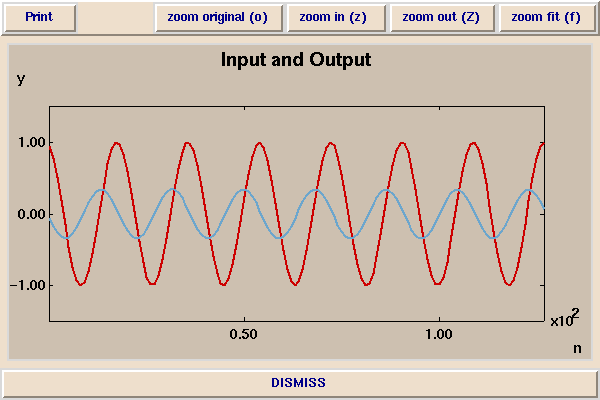
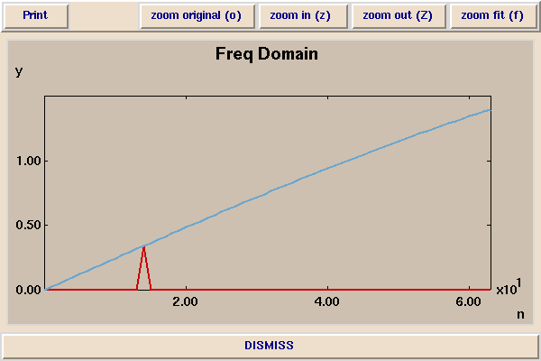

In the following picture, a sinusoid x(n) with frequency 440 Hz (in red) is passed through a linear shift-invariant system that produces the output y(n) = x(n) - x(n-1). This system computes a first-order difference. The output y(n), shown in blue, is a sinusoid with the same frequency, but the phase is shifted by 90 degrees and the amplitude is smaller.

The sample rate is 8kHz. In this demonstration, we vary the frequency of the input sine wave and notice that the amplitude of the output sine wave varies, but not its frequency. Moreover, we notice that the output is always a sine wave. Indeed, a sinusoidal input to any shift-invariant system always yields a sinusoidal output with the same frequency. Only the phase and amplitude can change. The variation of the output amplitude with frequency is shown in the following plot.

The blue curve shows the "amplitude response" of the first-order difference system. It plots the "gain" (change in amplitude) of the system as a function of the frequency of the input. In red we show a spike that indicates a particular input frequency. As the frequency of the input changes, the spike moves left or right, but its height is always determined by the amplitude response.
In this demonstration, the amplitude response is a fairly simple function. A more elaborate amplitude response is shown in the next demonstration.